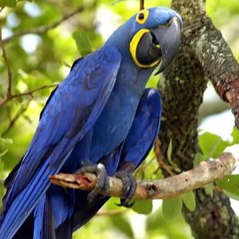
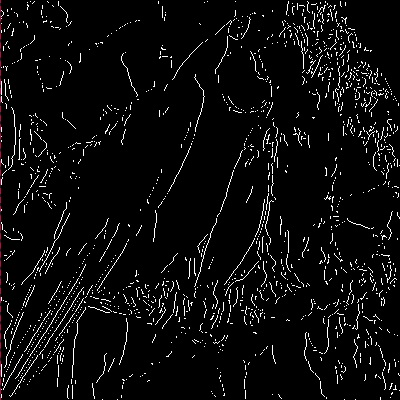
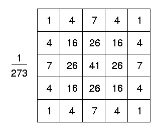
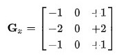
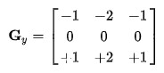

A detectação de aresta é um processo com o objetivo de encontrar mudanças bruscas no brilho ou na cor da imagem, matemáticamente falando, as suas descontinuidades, essas arestas podem significar mudanças de profundidade, iluminação, material. É frequentemente utilizada como pré-processamento para a seleção de características em imagens a serem utilizadas em processos de machine learn pois simplifica o conteúdo do imagem, capturando apenas o essencial, os "objetos" presentes nela.
 Os critérios para um algoritmo adequado para a detecção de arestas são:
Considerado um dos melhores algoritmos para detectação de aresta atualmente existentes, foi criado pelo cientista da computação John Canny em 1986. O algoritmo funciona em etapas, que são as seguintes:
A seguir iremos tratar indidualmente cada um desses processos.
Apesar de existirem adaptações do algoritmo que considera os 3 canais de cores, trabalhar com um único canal (todos os canais possuem valores idênticos) torna o processamento mais rápido e também é suficiente para a aplicação do algoritmo, pois considerar as arestas com base no tom de cinza retorna um resultado adequado.
Para tornar a imagem em preto e branco iremos simplesmente caminhar por cada pixel e calcular a média entre os 3 canais (RGB) e substituir este valor nos canais.
O próximo passo é a utilização de algum efeito de desfoque para tratar o ruído presente na imagem, pois o erro do ruído será distribuído entre os pixels ao redor, não possuindo assim um grande gradiente. Neste algoritmo iremos utilizar o filtro Gaussiano, cada pixel da imagem se tornará a média ponderada dos pixels ao seu redor, só que os pesos seguiram uma distribuição gaussiana. Note que a na distribuição gaussiana, todo pixel da imagem teria um peso diferente de zero, no entanto, podemos considerar apenas os pesos até 2 desvio padrões, pois os demais se aproximarão muito de 0.
Iremos utilizar a média igual a 0 e a variância é um parâmetro ajustável do algoritmo, podemos encontrar resultados finais melhores variando a variância da distribuição, nessa situação iremos utilizar o valor 1. Além disso, note que os nossos pixels formam uma matriz discreta, devemos portanto também discretizar nossa distribuição.
\( G(x,y) = \dfrac {exp(-\frac {x^2+y^2}{2 \sigma^2})} {2\pi \sigma^2} \)
Para discretizar o valor de cada pixel integramos a função de distribuição ao longo do pixel e utilizamos este valor, note que os valores da integral não são inteiros, então arredondamos de tal forma que os menores valores serão 1, a matriz a seguir apresenta quais serão os coeficientes utilizados.
Agora que já possuimos a imagem em canal único e desfocada, o próximo passo é calcular a derivada de tom nos pixels. Note que novamente iremos utilizar algo que se aproxima a uma derivada, e não a definição real. Em nosso pixel \( (x,y) \) não conseguimos definir um \( h \to 0\) e calcular o valor das funções em \( f_x(x+h) \) e \( f_y(y+h) \), já que novamente estamos tratando com um espaço discreto. Para a aproximação, iremos utilizar o kernel de Sobel, que é uma matriz \( (3,3) \), e em cada pixel iremos calcular a diferença entre o pixel seguinte e o anterior. Observe as matrizes:
 Note que possuimos duas matrizes, isto ocorre pois devemos calcular a derivada nas duas dimensões e com esses dois valores em cada um dos pixels, substituimos o valor pela nova magnitude definida por \( M = \sqrt {G_x^2 + G_y^2}\). Note que também precisamos calcular a direção deste gradiente, por isto criamos uma nova matriz com a mesma dimensão da matriz de pixels e preenchemos com a função \( \Theta = arctan (\dfrac {G_y}{G_x})\).
Note que com este resultado, podemos visualizar já a detecção de algumas arestas, os próximos passos agora serão focados em encontrar o meio das arestas que possuem mais de 1 pixel de largura e a seguir limpar as arestas geradas por ruído (com intensidade muito baixa).
Como o próprio nome já diz, nessa etapa iremos analisar as arestas obtidas e verificar quais dos pixels representam de fato um máximo local, e retirar da intesidade dos pixels que não são máximos locais. Para isso, utilizaremos a direção do gradiente calculada pelo algoritmo anterior e iremos comparar os pixels nessa direção, se o pixel \( (x,y)\) for o maior entre os pixels \( (x,y) + \Theta(x,y) \) e \( (x,y) - \Theta(x,y) \), ele será mantido, caso contrário, seu valor será alterado para 0.
Obs: Para rodar este algoritmo, é necessário que o algoritmo de Sobel tenha sido rodado anteriormente.
Por fim, dado que já obtemos a arestas com 1 pixel de largura, iremos verificar qual faixa de intensidade de fato são arestas, mais uma vez, para cada pixel de nossa imagem, iremos verificar se está acima do limite inferior definido e se está abaixo do limite superior, caso esteja acima do limite superior, classificamos a aresta como uma aresta forte.
Valor inferior: Valor superior:
Utilize uma imagem do Imgur ou do Github para funcionar, caso deseje utilizar imagens de outros sites, é necessário a instalação da extensão do Chrome Allow Control Allow Origin.Para uma visualização mais adequada, não utilize imagens com mais de 760 pixels de largura.
URL:
Valor inferior: